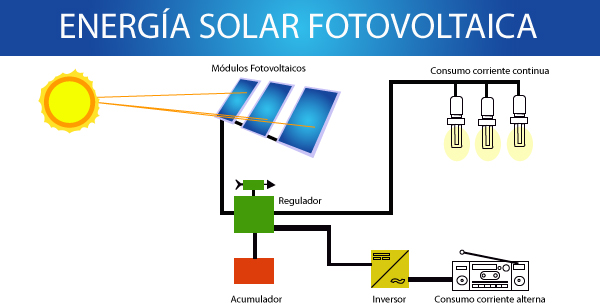

Energía Solar
La energía eólica es la energía obtenida a partir del viento, es decir, la energía cinética de las masas de aire que es convertida en electricidad u otras formas útiles de energía para las actividades humanas.
Aprovechamiento
El aprovechamiento de la energía solar se puede realizar de cuatro formas: Conversión térmica de baja temperatura, Conversión térmica de media temperatura, Conversión térmica de alta temperatura (sistema fototérmico) y por conversión fotovoltaica (sistema fotovoltaico).
Conversión térmica de baja temperatura
Se absorbe el calor del Sol y se transmite a un fluido (suele ser agua). La tecnología solar térmica de baja temperatura se suele utilizar para el calentamiento de agua.
Conversión térmica de media temperatura
Para estos colectores regularmente se utilizan colectores parabólicos, los cuales concentran la radiación solar en un tubo colector encargado de recibir y transmitir el calor, logrando una temperatura de hasta 300° C.

Conversión térmica de alta temperatura
La conversión térmica de alta temperatura suele ser destinada especialmente a generar energía eléctrica, por medio de una torre central paraboloide, o un campo de helióstatos que concentran la radiación solar.

Energía Solar Fotovoltaica
Se convierte la radiación solar directamente en electricidad. Basada en el efecto fotoeléctrico, en el proceso emplea unos dispositivos denominados celdas fotovoltaicas, los cuales son semiconductores sensibles a la luz solar; de manera que cuando se expone a la luz, en la celda se produce una circulación de corriente eléctrica entre sus dos caras.
